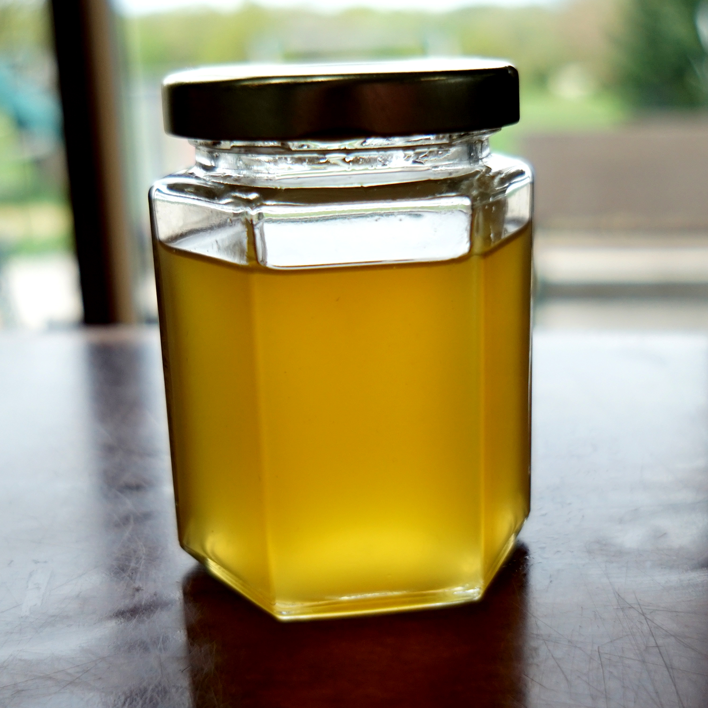
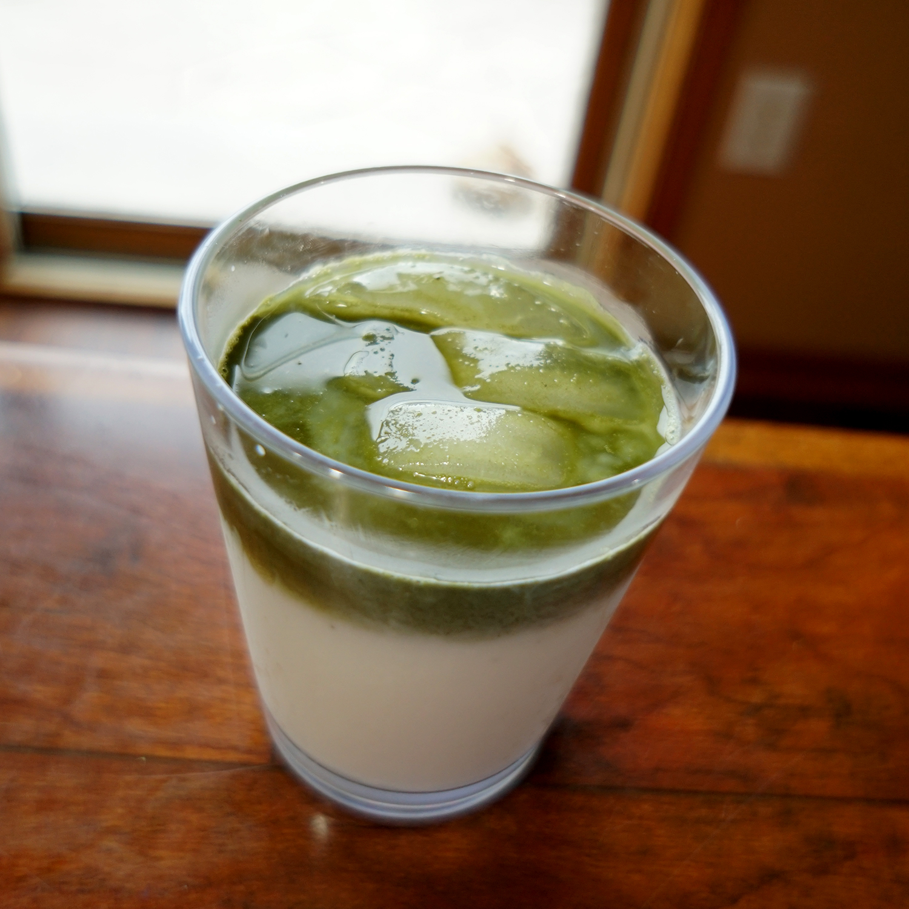

Refreshing drinks from far and wide, both from scamps and the dignified

Ingredients
- 6 Lemons
- 1c Sugar
- 1/2c Water
- Tonic water
Lemon Squash
- Peel the zest from 5 of the lemons. Juice all the lemons.
- Put the zest, lemonjuice, and sugar in a small saucepan and bring to a simmer, stirring to dissolve the sugar. Simmer for 30 Minutes.
- Remove from the heat and pour through a sieve into a pretty glass container. Discard the zest and pulp.
- Store in a refrigerator until ready to drink, up to a month
- To drink, mix 3/4c of the lemon squash syrup with 3 cups of tonic water.

Ingredients
- 1/2c Heavy Whipping Cream
- 2ounces Dark Chocolate
- 2T Cocoa Powder
- 1/3c Sugar
- 1/4t Salt
- 2c Water
- 2c Milk
- 1t Vanilla Extract
- 4T Whipped Heavy Whipping Cream
Frothy Hot Chocolate
- Place dark chocolate in a heat-proof mixing bowl.Heat 1/2c cream in a small saucepan until bubbling around the edges. Pour cream into the chocolate bowl, let stand for a minute; then whisk until smooth.
- In a medium saucepan, combine cocoa powder, sugar, and salt. Stir in water and cook over medium-high heat until hot and just begining to boil.Add the milk and heat until just hot.
- Remove from heat and whisk in the chocolate and cream mixture. Add the vanilla and whisk to combine.
- Pour into mugs and top with a Tablespoon of whipped cream.

Ingredients
- 1t Matcha Powder
- Hot water
- 1c Milk
- 1 1/2 T Heavy Whipping Cream
- 1t sugar
- Ice
Green Milk (Matcha Latte)
- Place matcha in pint canning jar. Add enough hot water to have a solid line of water from outside of jar. Screw on lid and shake until combined.
- Open jar and add milk, cream and sugar. Screw jar closed and shake until combined.
- Open jar and add ice. Screw close and shake. Open jar and enjoy.